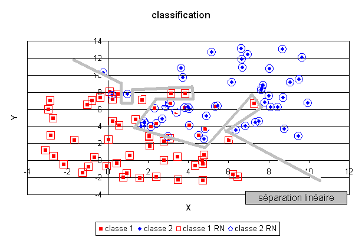

La classification#
Comme la régression, la classification consiste aussi à trouver le
lien entre une variable  et une variable aléatoire discrète
suivant une loi multinomiale
et une variable aléatoire discrète
suivant une loi multinomiale  .
.
Problème P1 : Classification
Soit une variable aléatoire
et une variable aléatoire discrète  ,
l’objectif est d’approximer la fonction
,
l’objectif est d’approximer la fonction  .
Les données du problème sont
un échantillon de points :
.
Les données du problème sont
un échantillon de points :  avec
avec  et un modèle paramétré avec
et un modèle paramétré avec  :
:

avec  ,
,  est une fonction de paramètre
à valeur dans
est une fonction de paramètre
à valeur dans  et vérifiant la
contrainte :
et vérifiant la
contrainte :  .
.
Le premier exemple
est une classification en deux classes, elle consiste à découvrir le lien qui
unit une variable aléatoire réelle et une variable aléatoire
discrète et  , on dispose pour cela d’une liste :
, on dispose pour cela d’une liste :

Il n’est pas facile de déterminer directement une fonction
qui approxime  car et
sont toutes deux discrètes. C’est pourquoi, plutôt que de résoudre
directement ce problème, il est préférable de déterminer la
loi marginale
car et
sont toutes deux discrètes. C’est pourquoi, plutôt que de résoudre
directement ce problème, il est préférable de déterminer la
loi marginale  .
.
 est alors une fonction dont les sorties sont continues et peut
être choisie dérivable. Par exemple, peut être un réseau de
neurones dont les sorties vérifient :
est alors une fonction dont les sorties sont continues et peut
être choisie dérivable. Par exemple, peut être un réseau de
neurones dont les sorties vérifient :

Le réseau de neurones utilisé pour cette tâche est légèrement différent du précédent, il sera présenté ultérieurement. Un plan a été divisé en deux demi-plan par une droite délimitant deux classes, le réseau de neurones dont la couche cachée contient deux neurones linéaires, a retrouvé cette séparation malgré les quelques exemples mal classés.
En revanche, un réseau de neurones comportant trop de coefficients aura tendance à apprendre par coeur la classification et les quelques erreurs de classification comme le montre la figure suivante. La séparation produite par le réseau de neurones est de manière évidente non linéaire puisqu’aucune droite ne peut séparer les deux classes déterminées par cette fonction. Cette classe de modèles permet donc de résoudre des problèmes complexes en gardant toutefois à l’esprit, comme dans le cas de la régression, qu’il n’est pas moins de facile de dénicher le bon modèle que dans le cas linéaire.